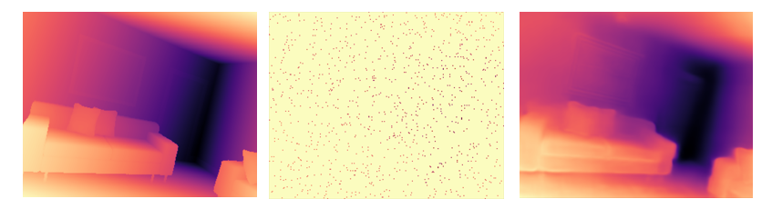
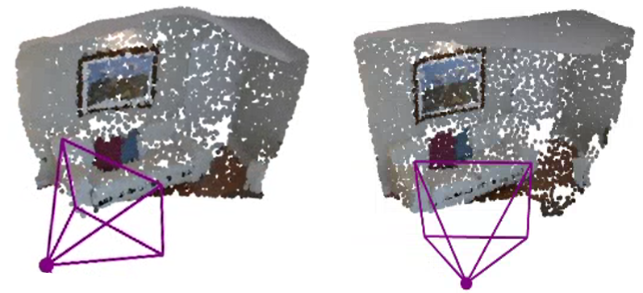

Introduction
A drawback of supervised deep networks, is that they need large labeled datasets to be properly trained. Creating labeled datasets for each of the countless SLAM applications is a laborious and expensive effort, which is why research has recently focused on some form of self-supervision The main challenges of self-supervised depth predition, especially in the context of indoor scenes, with which we are mainly concerned, are the following:
Method
In this section we provide a detailed insight into our online adaption module which is basically self-supervised
depth estimation through novel view synthesis. We first explain the basic building blocks for self-supervised
depth estimation and then present self-supervision from the global point cloud created by the
PointFusion method.
Due to the differentiable nature of gradSLAM, we can leverage the global reconstructed pointcloud to refine our depth maps in an online fashion. This task can be easily coupled with the novel view synthesis framework from the previous section. However, since we will compare pointclouds, this supervision incurs additional cost at each refinement step. The global pointcloud $G$ contains points that are updated after online adaption has been applied to the previous key-frames. Subsequently, these points are also refined through depth map fusion within the PointFusion based SLAM. Therefore, these points can be used to supervise future key-frames.
Results
In this section we provide experimental results to validate the effectiveness of online refinement module along with the corresponding 3D reconstruction from PointFusion. Note that all experiments were carried out with median scaling unless otherwise specified.
| Depth predictions and reconstructed point clouds of a pair of key-frames taken from the ICL dataset. Left: Ground truth Center: No online-refinement Right: Online-refinement |
Depth predictions and reconstructed point clouds of a pair of key-frames taken from the TUM dataset.
Left: Ground truth Center: No online-refinement Right: Online-refinement
 |
|
The sequence of images shows a comparison between the ground truth depth map and the depth prediction after including
weak-supervision into the pipeline (1% of the pixels). The selected keyframe is taken from the ICL-NUIM dataset.
(a) Ground truth depth map (b) Sparse ground truth values (c) Predicted depth map.

|
|
Comparison between global pointcloud reconstructions without (left) and with (right) weak supervision of a sequence of
frames taken from the ICL-NUIM dataset.

|